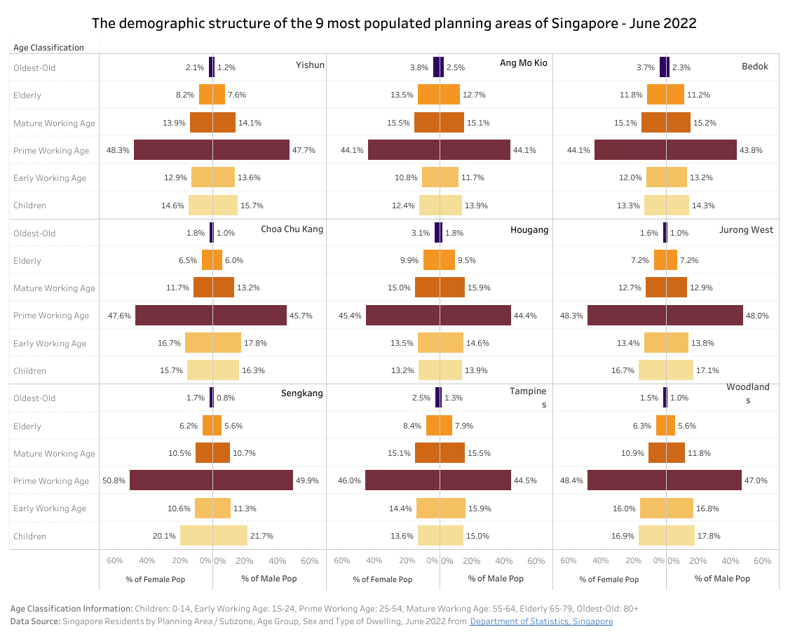
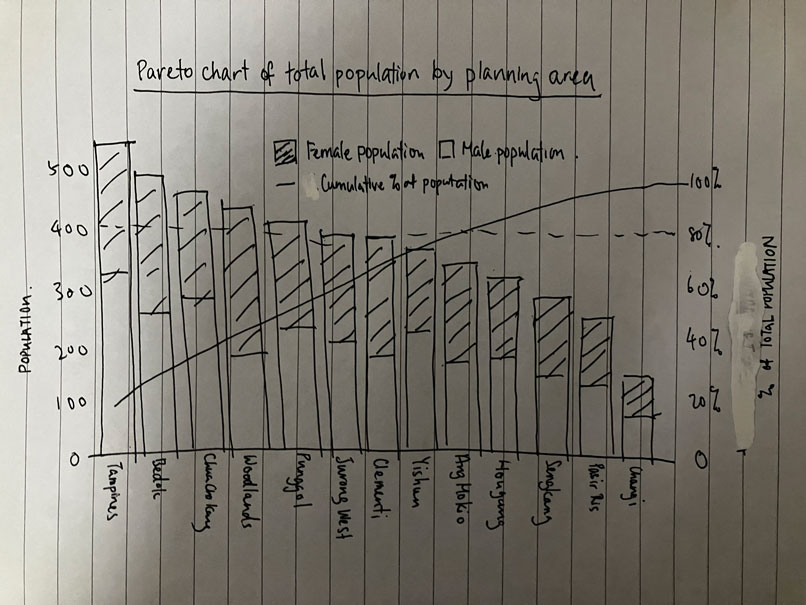
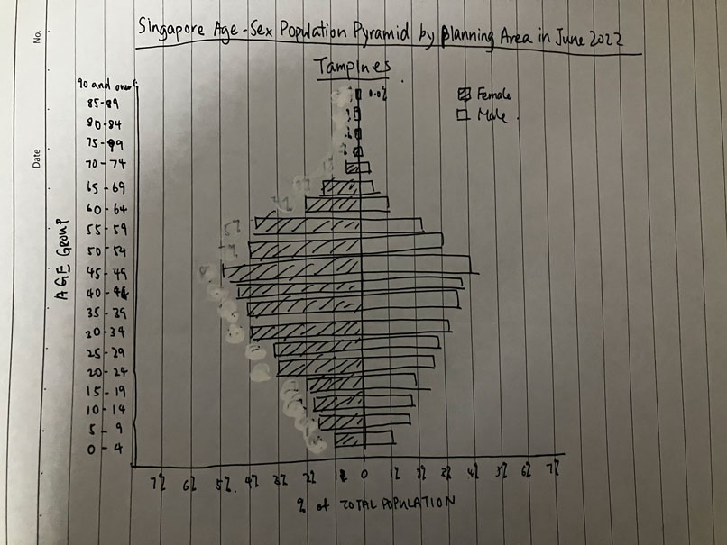
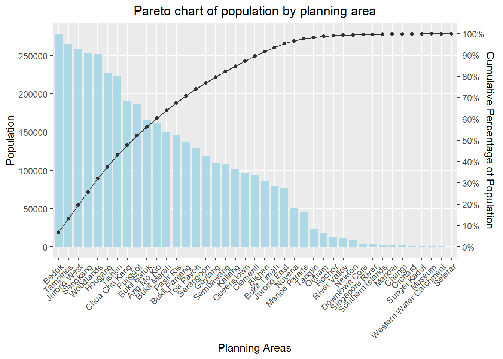
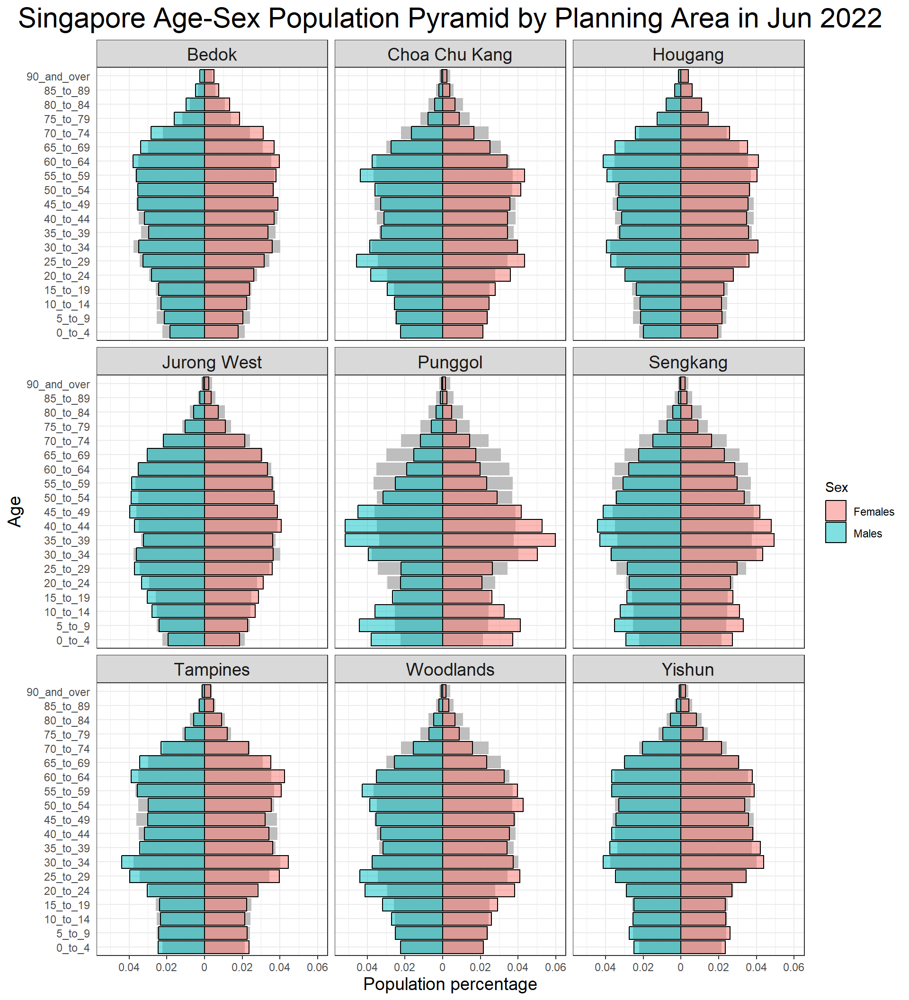

pacman::p_load(tidyverse)Take Home Exercise 2
1. Overview
In this take-home exercise, I will critic one of the Take-home Exercise 1 prepared by classmate in terms of clarity and aesthetics, and propose a remake using data visualisation design principles and best practices in lesson 1 & 2.
The data set used for this exercise is downloaded from Popoulation Trend Data, DoSS, and I will remake the original design by using ggplot2, ggplot2 extensions and tidyverse packages in Rstudio.
2. Critics
The original dashboard show the demographic structure of Singapore for top 9 most populated planning area. Age-sex pyramid is used to display gender and age group pattern in different planning areas. Nine selected planning areas is displayed on a single view by using trellis display.

2.1 Aesthetics
The overall theme of the graph is clean and easy to understand, The author made a good effort to fit the 9 charts in one single view. There is no overwhelming details and the graphs are easy to read
Sub-chart title format and position can be standardized for more professional look
The author can use distinct color to represent male and female population instead to show the age pattern for different gender for more meaningful insight
Vertical grid line can be added for easier reading of population %
Y axis label format and position can be capitalized and improved for easier reading
2.2 Clarity
The graph is generally clear in terms of title, x-axis label and overall layout. Data source is also included in caption.
Y-axis label age classification is unclear. Some patterns might be missing when the age data is grouped
% of total population would be better to illustrate gender pattern across age group. Can label only the max or min to emphasize on the most important information
Missing information on total population to illustrate the 9 selected planning areas are the most populated in Singapore
More insights can be derived if each planning area age-sex pattern is compared to overall singapore sex-age pattern
3. Proposed Sketch
Below sketches are created to illustrate the ideal data visualisation for ggplot2.
3.1 Pareto Chart

Pareto chart is used to illustrate the overall population of Singapore residents by planning area, and how much percentage that the top 9 planning areas represent. It gives a good idea on the significance of top populated areas within Singapore.
3.2 Age-Sex Population Pyramid

We keep the age-sex populated pyramid, but will improve in terms of the aesthetics and clarity. The key focus will be put on identifying the difference of planning area against the overall Singapore population.
4. Remake
4.1 Getting ready
Installing Packages
I use tidyverse package which includes ggplot2, dplyr, tidyr and readr for this makeover exercise. The code chunk below uses p_load() of pacman package to check if tidyverse packages is installed in the computer. If yes, then they will be launched into R.
4.2 Import Data
Data set named “respopagesextod2022” is used for the exercise below. Data is import using readr package.
pop_data <- read_csv("data/respopagesextod2022.csv")
head(pop_data)# A tibble: 6 × 7
PA SZ AG Sex TOD Pop Time
<chr> <chr> <chr> <chr> <chr> <dbl> <dbl>
1 Ang Mo Kio Ang Mo Kio Town Centre 0_to_4 Males HDB 1- and 2-Room … 0 2022
2 Ang Mo Kio Ang Mo Kio Town Centre 0_to_4 Males HDB 3-Room Flats 10 2022
3 Ang Mo Kio Ang Mo Kio Town Centre 0_to_4 Males HDB 4-Room Flats 10 2022
4 Ang Mo Kio Ang Mo Kio Town Centre 0_to_4 Males HDB 5-Room and Exe… 30 2022
5 Ang Mo Kio Ang Mo Kio Town Centre 0_to_4 Males HUDC Flats (exclud… 0 2022
6 Ang Mo Kio Ang Mo Kio Town Centre 0_to_4 Males Condominiums and O… 50 20224.3 Pareto Chart
4.3.1 Data Wrangling
Compute cumulative percentage by planning area
Below code chunk is used to calculate total population of Singapore
grandpop <- as.numeric(sum(pop_data$Pop))Below code chunk is used to calculate the cumulative population percentage of each planning area. It filters all the 0 in population, group the data by planning area and summarize the population, and then create a new column for total population, which later sort into descending order and calculate the cumulative percentage of total population.
total_pop <- pop_data %>%
filter(Pop != 0) %>%
group_by(PA) %>%
summarise(totalpop = sum(Pop)) %>%
mutate(grandpop=grandpop) %>%
arrange(desc(totalpop)) %>%
mutate(percpop = totalpop/grandpop) %>%
mutate(cumpop = cumsum(percpop)) %>%
mutate(cumabspop = cumsum(totalpop))
head(total_pop)# A tibble: 6 × 6
PA totalpop grandpop percpop cumpop cumabspop
<chr> <dbl> <dbl> <dbl> <dbl> <dbl>
1 Bedok 278640 4081540 0.0683 0.0683 278640
2 Tampines 265690 4081540 0.0651 0.133 544330
3 Jurong West 258540 4081540 0.0633 0.197 802870
4 Sengkang 253120 4081540 0.0620 0.259 1055990
5 Woodlands 252510 4081540 0.0619 0.321 1308500
6 Hougang 227540 4081540 0.0557 0.376 15360404.3.2 Plot Pareto Chart
Pareto chart shows the population of planning area in descending order and cumulative percentage. This is to illustrate which are the top populated areas in Singapore and identify the most significant area for later analysis. Pareto chart was plotted using ggplot2 as follows:
geom_col() is used to create the bars and color and width is adjust for neater look
geom_point() & geom_line is used to plot the line for cumulative percentage
scale_y_continuous is used for to create secondary axis for the cumulative percentage of population
theme() is adjusted to standardize axis text and title for neater look
ggplot(data = total_pop, aes(x = reorder(PA, -totalpop))) +
geom_col(aes(y=totalpop), fill = 'lightblue', width= 0.8) +
geom_point(aes(y=cumpop*278640), color = 'grey20', linewidth = 0.8) +
geom_line(aes(y=cumpop*278640, group = 1), colour = 'grey20', size = 0.4) +
labs(x = "Planning Areas", title = "Pareto chart of population by planning area") +
scale_y_continuous(
name = 'Population', breaks = seq(0, 300000, 50000), minor_breaks = seq(0, 300000, 50000),
sec.axis = sec_axis(~.*1/278640, name = 'Cumulative Percentage of Population', breaks = seq(0, 1, by = 0.1), labels = scales::percent)
) +
theme(axis.text.x = element_text(angle = 45, vjust = 1, hjust=1), plot.title = element_text(hjust = 0.5))
4.4 Age-Sex Population Pyramid
A sex-age population pyramid shows the distribution of population by age groups and sex, which can be used to visualize the overall structure of a particular population. The shape of the pyramid can be used to indicate the reproductive capabilities and likelihood of continuation of a species. Our target is to show the population structure of top 9 populated planning area in one single view.
4.4.1 Data Wrangling
Compute the population percentage by age and sex
We are going to compute the percentage of particular planning area population by gender and age. Below are the codes to transform the data.
- Summarize population by planning area, sex and age group and rearrange the order of age group
order <- c("0_to_4", "5_to_9", "10_to_14", "15_to_19", "20_to_24", "25_to_29", "30_to_34", "35_to_39", "40_to_44", "45_to_49", "50_to_54", "55_to_59", "60_to_64", "65_to_69", "70_to_74", "75_to_79", "80_to_84", "85_to_89", "90_and_over")
pyramid <- pop_data %>%
filter(Pop != 0) %>%
mutate(AG = factor(AG, levels = order)) %>%
arrange(AG) %>%
group_by(PA, Sex, AG) %>%
summarise(pymd_pop = sum(Pop)) %>%
mutate(grandpop=grandpop)
head(pyramid)# A tibble: 6 × 5
# Groups: PA, Sex [1]
PA Sex AG pymd_pop grandpop
<chr> <chr> <fct> <dbl> <dbl>
1 Ang Mo Kio Females 0_to_4 2480 4081540
2 Ang Mo Kio Females 5_to_9 3120 4081540
3 Ang Mo Kio Females 10_to_14 3320 4081540
4 Ang Mo Kio Females 15_to_19 3620 4081540
5 Ang Mo Kio Females 20_to_24 4030 4081540
6 Ang Mo Kio Females 25_to_29 5020 4081540- Calculate the total population by planning area
total_pop_PA <- total_pop |> select(PA, totalpop)- Join the two data frame to form a data set with population by planning area and population by planning area, age group and sex. Calculate the percentage with the two columns.
- Create a data frame for the overall population
joined_tab <- left_join(pyramid, total_pop_PA,
by = c('PA' = 'PA')) %>%
mutate(pymd_pop_perc = pymd_pop/totalpop)
topdata <- top_n(total_pop_PA, n=9, totalpop)- Prepare data for the overall population pyramid by grouping data by sex and age, and summarize the population
overall_pyramid <- pop_data %>%
filter(Pop != 0) %>%
mutate(AG = factor(AG, levels = order)) %>%
arrange(AG) %>%
group_by(Sex, AG) %>%
summarise(pymd_pop = sum(Pop)) %>%
mutate(totalpop=grandpop)4.4.2 Plot Population Pyramid in Trellis View
The population pyramid was plot using ggplot as follows:
geom_col() was used to create the bar chart, and ifelse() is used to convert male population percentage to the left of the graph and female to the right.
Formula of pymd_pop/totalpop is used to calculate the population percentage for each age group and sex.
The color and format of overall population pyramid is adjusted to lighter grey for easier reading
labs() was used to assign main title and axis titles.
scale_x_continuous() is used to tidy up the the x axis label for clarity
theme() is used to adjust font size and position for neater look
d <- joined_tab %>% filter(PA %in% topdata$PA)
ggplot(d, aes(x = ifelse(Sex == "Males", yes = -(pymd_pop/totalpop), no = pymd_pop/totalpop), y = AG, fill = Sex)) +
geom_col(data = overall_pyramid, fill = 'grey') +
geom_col(color = "black", alpha = .5) +
facet_wrap(~ PA) +
labs (x = "Population percentage", y = "Age", title='Singapore Age-Sex Population Pyramid by Planning Area in Jun 2022') +
scale_x_continuous(breaks = seq(-0.06, 0.06, 0.02), labels = abs(seq(-0.06, 0.06, 0.02))) +
theme_bw() +
theme(axis.ticks.y = element_blank(),
plot.title = element_text(hjust = 0.5, size = 22),
axis.title = element_text(size = 14),
strip.text = element_text(size = 14))
4.5 Data Insights
With the new Pareto chart, we are able to identify the top 9 populated areas in Singapore, which make up on more than 50% of total Singapore population
With the remake Age-Sex pyramid, we can observe more patterns from different planning area:
Punggol and Tampines have very different age-sex pattern with the overall Singapore population and the rest of the planning areas
Jurong West has a similar age-sex pattern with overall population
Sengkang, Punggol and Tampines have relatively higher younger population
Hougang, Jurong West and Bedok has more 60 years or above population
5. Learning Point
Aesthetics
When there is multiple chart of elements on the same graph, it is important to adjust the color of the chart to shows what is the primary information (planning area population) and secondary information (overall population)
Color should be used to contrast important information and should be used carefully
Simple background is preferred when there are multiple graphs in the same view
Clarity
Some insights might be lost if we group data unnecessarily, for example the age group pattern will be lost if we group the different age groups together
Not all data labels should be shown, sometimes simple is beauty
Data comparison is a good way to draw additional insights in our graphs, for example we compare overall population with planning area population for more insights
Data visualisation is about trial and error. Sometimes you have to go through many iteration in order to have the best outcome. It is important to be patient during the process.